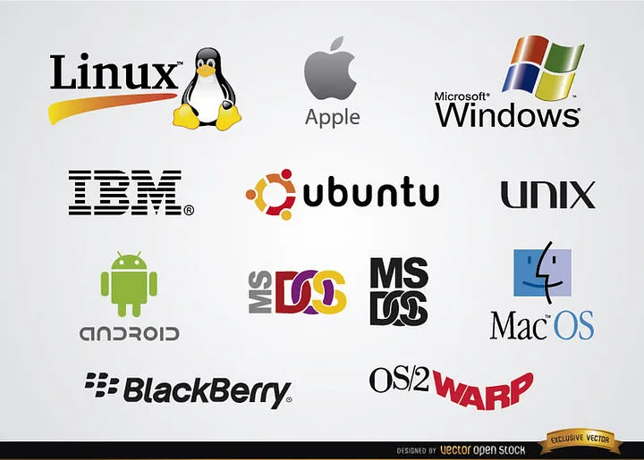
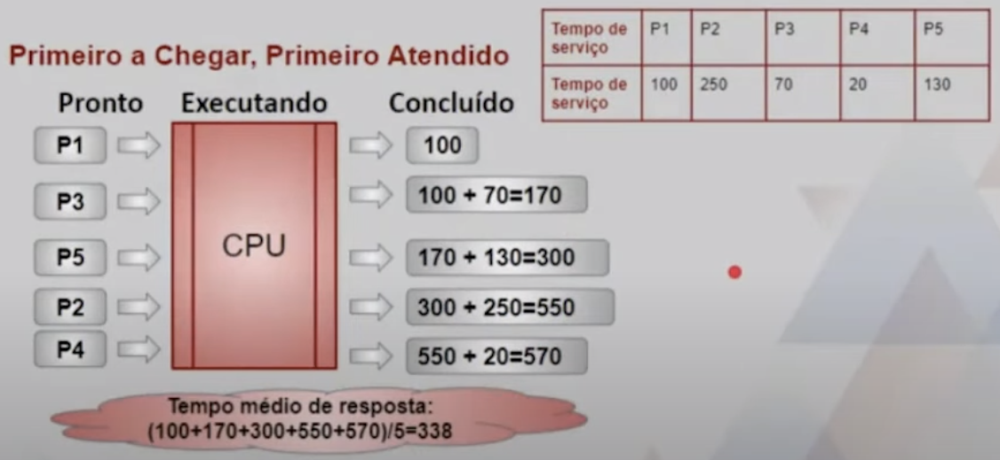
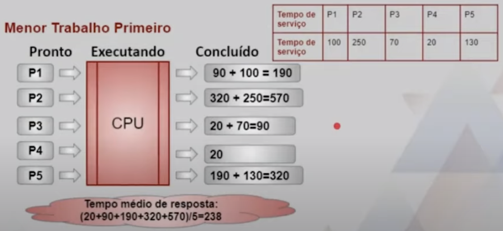
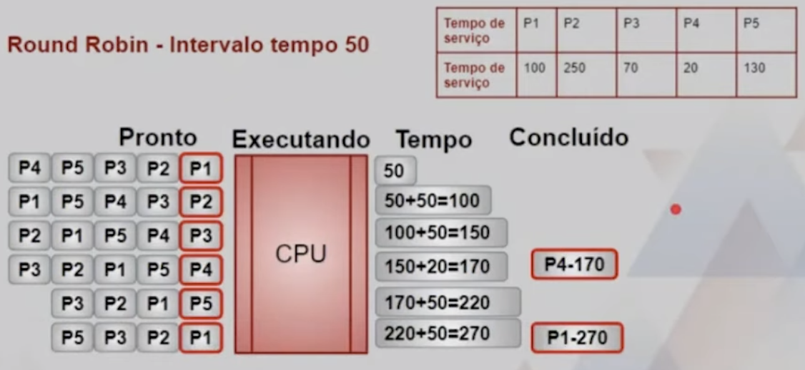
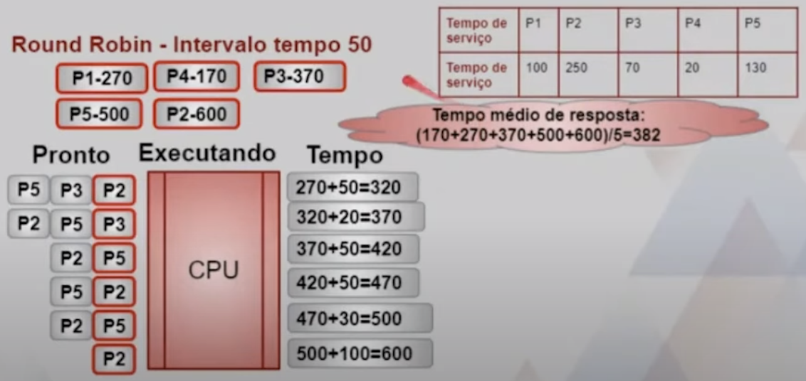

Disciplinas
-
SISTEMAS COMPUTACIONAIS. Concluído
Materiais
Vídeo 1 - Introdução a Conceitos de Computação - Sistema Operacional. sendProf° ministrante: Cláudio Fabiano Motta Toledo (UNIVESP).
Conteúdo
Sistema Operacional.
- SUMÁRIO.
- Papel do Sistema Operacional.
- Gerenciamento de Memória.
- Gerenciamento de Processo.
Papel do Sistema Operacional.
- Softwares de sistemas:
- Programas que gerenciam um sistema computacional e interagem com hardware
- Há uma complexidade considerável nos sistemas de computadores modernos.
- Demanda a gerência de diversos dispositivos.
Sistema operacional: software de sistema que gerencia recursos computacionais e fornece uma interface para interação com o sistema.
- Dois papéis principais:
- Máquina estendida (top-down)
- Viabilizar tarefas de baixo nível para o usuário.
- Gerenciador de recursos (bottom-up)
- Gerenciar dispositivos que compõem o computador.
- Gerenciamentos de Memória, de Processos e de CPU
- Multiprogramação: A técnica de manter múltiplos programas em memória principal ao mesmo tempo, competindo pela CPU
- Gerenciamento de memória: O ato de manter registro de como e onde programas são carregados em memória principal
- Processo: a representação dinâmica de um programa durante execução
- Gerenciamento de processo: o ato de manter registro de informação para processos ativos
- Escalonamento de CPU: ato de determinar qual processo em memória terá acesso à CPU, de modo que ele possa executar
- Tempo compartilhado
- Tempo compartilhado: um sistema no qual tempo de CPU é compartilhado entre múltiplos usuários interativos ao mesmo tempo
- Máquina virtual: a ilusão criada por um sistema de tempo compartilhado de que cada usuário possui uma máquina dedicada
Gerenciamento de Memória.
- Registrar onde e como um programa reside em memória.
- Converter endereços lógicos de programas em endereços reais de memória.
- Endereço lógico: referência a um valor armazenado, relativa ao programa que faz a referência.
- Endereço físico: endereço real no dispositivo de memória principal.
- Ligação de endereço: o mapeamento de um endereço lógico em um endereço físico.
- A abordagem de gerenciamento de memória na qual um programa é carregado em uma área contígua de memória
há mais de um programa aplicativo em memória ao mesmo tempo, compartilhando espaço em memória e tempo de CPU.
- Técnica de partição fixa: a memória é dividida em um número específico de partições nas quais os programas são carregados.
- Técnica de partição dinâmica: a memória é dividida em partições necessárias para acomodar programas.
- Registrador base: mantém o endereço de início da partição corrente.
- Registrador de limites: mantém o tamanho da partição corrente.
- Técnica de memória paginada: processos são divididos em páginas de tamanho fixo e carregados em quadros de memória.
- Quadro: tamanho fixo de memória principal que guarda uma página de processo.
- Página: tamanho fixo de um processo que é armazenado em um quadro de memória
- Tabela de mapeamento de páginas (TMP): registro de relacionamentos página/quadro usada pelo sistema operacional.
Gerenciamento de Processo.
- Processos CPU-bound (orientados à CPU): processos que utilizam muito o processador.
- Processos I/O-bound (orientados à E/S): processos que realizam muito E/S;
- Escalonamento de CPU: determinar qual processo no estado pronto deve ser movido para o estado executando.
- Não preemptivo: o processo correntemente em execução cede a CPU voluntariamente.
- Preemptivo: o sistema operacional decide favorecer outro processo, interrompendo o processo em execução.
- Tempo de retorno: tempo decorrido entre a chegada do processo ao estado pronto e sua conclusão final
Primeiro a chegar, primeiro a sair:
Menor trabalho primeiro:
Round Robin - Intervalo tempo 50:
 